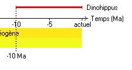
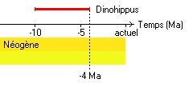
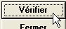
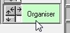
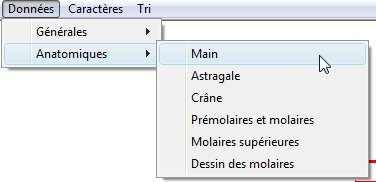
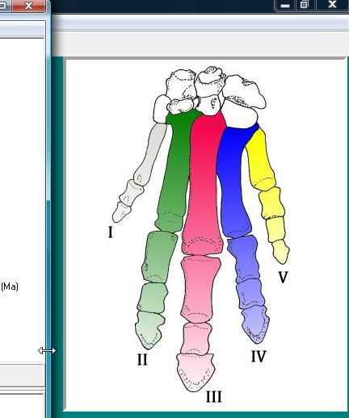
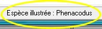
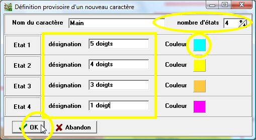
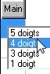
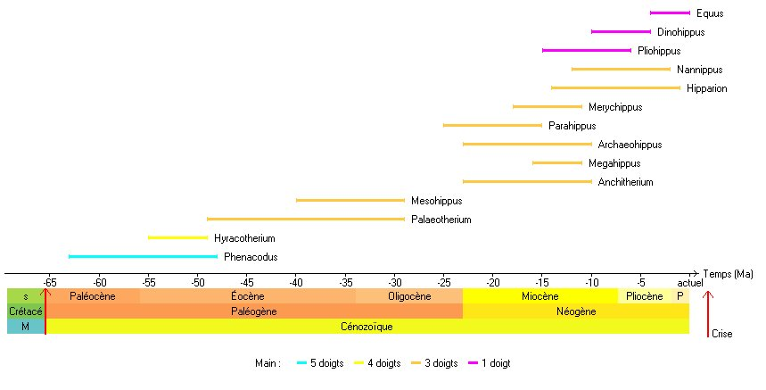

Organiser des
données paléontologiques
Organiser des
données paléontologiques
Il s'agit d'introduire
les concepts fondamentaux, à partir de l'étude d'un
groupe comportant de nombreux fossiles (collection Équidés...).
Cette activité est
accessible à partir du menu Organiser.
Positionnement des taxons sur
l'échelle du temps
- L'activité consiste dans un premier temps
à placer les taxons par rapport à l'axe du temps, de
manière à obtenir des positions en accord avec les
datations des fossiles.
Activer les taxons un par un, en cliquant sur leur
nom dans le tableau, pour les faire apparaître sur le graphique.
Les taxons sont placés, par défaut, comme actuels (au
temps 0), il faut alors les positionner dans les temps
géologiques en utilisant les données du tableau.
Positionner deux taxons fossiles :

Exemple de déplacement d'un
taxon (Dinohippus) : le curseur et la ligne d'information aident au
positionnement.
Si l'espèce fossile a vécu pendant une longue
période, positionner l'âge d'apparition puis
son âge de disparition.
Lorsque le positionnement est
terminé pour deux fossiles, faire vérifier
l'arbre. Le logiciel propose alors de placer automatiquement les autres
taxons.

Exemple de résultat, une fois tous
les taxons placés :

Remarque
: si le positionnement ne peut être assez précis,
étendre horizontalement la
fenêtre de datation.
Un menu
donne des options d'affichage qui concernent essentiellement
l'échelle des temps géologiques. Dans l'exemple
ci-dessus, l'affichage des époques et des crises a
été activé.

Organisation des observations
: définition de caractère et de leurs états
- Affichage des documents
correspondant aux données :
- Cliquer sur le bouton Organiser 
- Choisir la donnée à afficher
(menu Données)
- Cliquer sur le nom d'un taxon dans le
tableau : le document correspondant s'affiche à droite
et le nom du taxon apparaît en bas de la fenêtre.

- S'il s'agit d'un taxon supplémentaire
ajouté à la collection, un simple texte de description de
l'ensemble de ces taxons s'affiche à la place de l'image.
- Définition de caractères
et de leurs états
A partir des données de Phylogène (ou
d'autres documents comme des moulages de pattes ou de dents...), on
peut définir quelques caractères et leurs états.
Ce sera l'occasion d'expliquer le vocabulaire.
- Choisir le menu Caractères/Nouveau

- Remplir la fiche de définition du
caractère

- Nom du caractère
- nombre d'états
- désignation des états
- couleur affectée à chaque état (pour
en changer, cliquer sur le carré coloré)
- cliquer sur OK.
- Remplissage du tableau avec les états
définis 
- Coloration des taxons
du graphique en fonction des états

Comment établir les relations de parenté entre les taxons
? Sur quels états de caractère peut-on s'appuyer
(introduction de la distinction entre état primitif et
état dérivé) ? Ces problèmes pourront
être abordés au cours ou à la fin du travail.
Avec une collection de fossiles assez fournie, l'aspect
buissonnant de l'évolution pourra être souligné.
{kind=link}